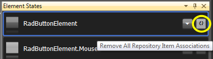
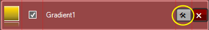

Working With Repository Items
| RELATED VIDEOS |
| Introduction to the Visual Style Builder for WinForms In this recorded webinar, you will learn how to build themes using the latest version of Visual Style Builder. You will also learn what Theme Repositories are and how they make creating themes easier. (Runtime: 42:56) [ Introduction to the New Visual Style Builder for WinForms ](http://tv.telerik.com/winforms/visualstylebuilder/introduction-new-visual-style-builder-winforms) |
Overview
Repository and Repository Items are major concept in Visual Style Builder.
These items allow you to quickly apply property settings per element
basis and since repository items' settings are reused, the
size of the generated XML files and the time needed to de-serialize them are
optimized. Visual Style Builder allows for intuitive and straightforward
Repository management through series of editors and User Experience tools such
as drag-and-drop to an ItemState, on-the-fly drop-down of all available
Repository Items, etc.
Repository Item Types
Each repository contains items that can be reused throughout themes. The
currently supported repository item types are as listed below:
Fill
Border
Text
Image
Arrow
The different repository item types are mapped to different types of
elements. For example, Fill repository items can be only associated with
instances of the FillPrimitive class. Following the same logic, Border
repository items are only applicable to BorderPrimitive elements and Arrow
repository items to ArrowPrimitive instances. Image and Text repository items
are a bit different in terms of supported elements. For instance, Text
repository items can applied both to TextPrimitive and VisualElement instances.
Image repository items can be applied both to ImagePrimitive instances and
VisualElements that support images. In general, you should not have any concern
when applying repository items since the Visual Style Builder automatically
filters the available repository items according to the currently styled
elements.
You can also create new repository items for the currently loaded
repository. There are separate editors for each repository item type which are
displayed accordingly. Before saving the newly created repository item, the
Visual Style Builder checks whether its key is unique and if not, prompts you
to change the key with a unique value.
Repository Item Types and LightVisualElement
The LightVisualElement is a special type of primitive class that supports
the functionality of all other primitives without building an element tree. In
other words, the LightVisualElement paints its Fill, Border, Text and Image on
its own. Therefore, the LightVisualElement is type of element that supports all
Repository Item Types (excluding Arrow type) and thus, when editing such
elements in the Visual Style Builder, the repository is filtered appropriately
to display all repository items available.
Associating Repository Items with Elements and States
You can easily associate a repository item with a given element for a
specific state by dragging the repository item from the repository and dropping
it onto the state in question:

The picture above shows how a repository item with name ButtonNormalFill is
associated with the ButtonFill element of the RadButton control for the default
(RadButtonElement) state.
Another way to associate a repository item with an element for a given state is
to use the state’s Available Repository Items popup which is shown upon click
on the drop-down button on the right side of the state visual
representation:

The Available Repository Items popup contains a list of repository items
that can be associated with the selected state of the current element.
Repository items that are associated to a Visual State are highlighted in red
and are initially checked.
Removing Repository Item Association
Depending on whether you want to remove all repository item associations or
just a specific one, you can take two directions:
• Press the ‘Remove All Repository Item Associations’ button which is
displayed on each state next to the drop-down button

• Open the ‘Available Repository Items’ popup, click the Show Only Applied Repositories check box to view
only the associates with this state repositories and uncheck the repository items to remove the association with them:

Editing Repository Items
You can easily edit a repository item by opening its editor from the ‘Edit
Repository Item’ button for each repository item in the list as shown on the
picture below:

The ‘Edit Repository Item ‘ dialog is automatically adjusted to show
specific controls for the specific repository item types. In general, however,
the dialog provides you with possibility to define a key and a name for the
repository item, as well as to define whether the repository item’s property
settings are animated. You can also choose to modify the settings of the item
and save a new repository item without overwriting the current one. On the
right side of the dialog there is a property grid that displays all properties
that can be modified for the repository item. The properties in bold have
values defined in the repository item while the others have their default
values:

When defining
repository item key you should make sure that the key is unique in order to
create/save the item.
The Animate State Transition checkbox determines whether the repository
item’s property values will be animated when a state of the element, to which
the item is associated, is activated. For instance, all color properties
of the repository item, displayed in the dialog above, will be animated from
the values present when the corresponding element state occurs, to the values
defined in the property grid on the right. After editing the repository item,
you can either cancel the modifications by pressing the "Cancel" button, save
the modifications by pressing the "OK" button, or save a new repository item by
pressing the "Save As New" button. The "Save As New" button is only visible
when an already existing repository item is opened for edit.
Deleting Repository Items
You can easily delete a repository item from the currently loaded repository
by clicking on the red "Delete" button which resides next to the "Edit" button.
You will be asked to confirm the operation and in case you do so, the
repository item will be removed from the repository. All references to
this repository item will be removed also.